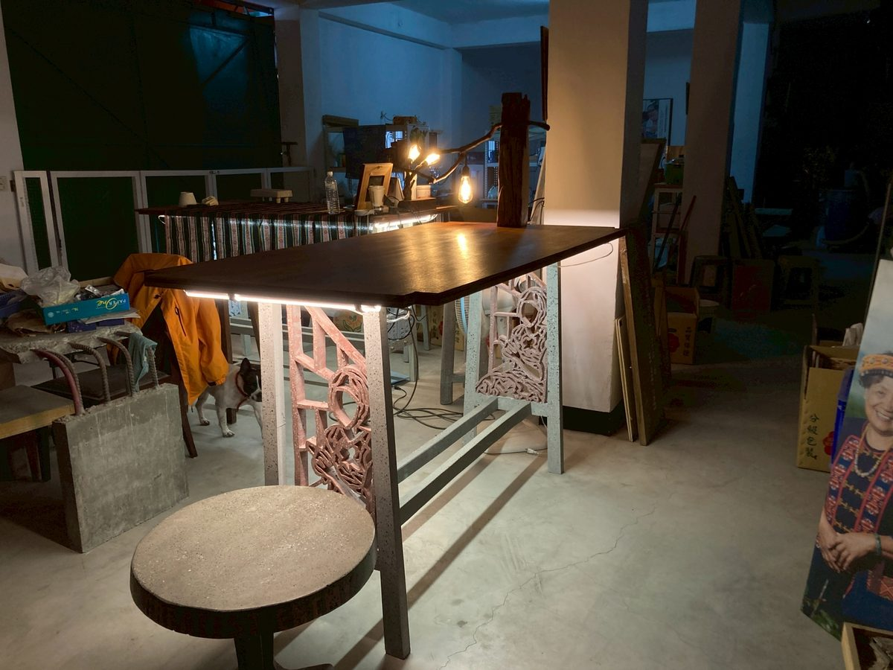
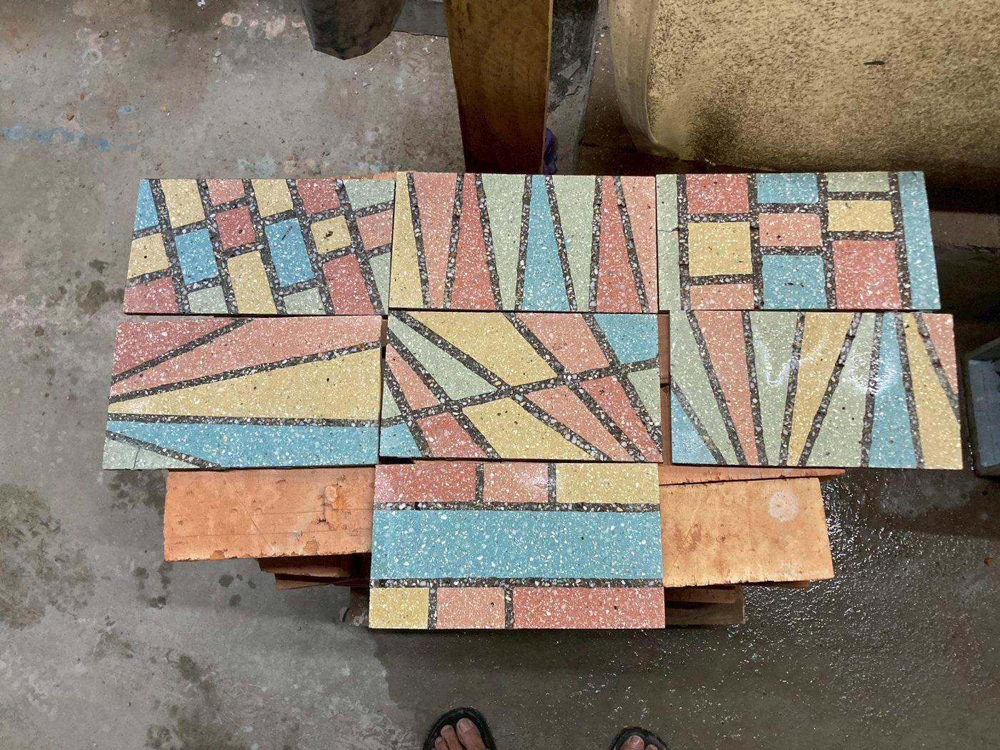

永續日誌
從迷宮迴路設計到 EAC 水磨工序，透明化過程、保留核心配方。這是一件作品的誕生，也是一段廢料的重生。
很多人問：水泥音響聽起來怎麼樣？但我們更想讓你知道的是：它是怎麼誕生的。
Concrete Speaker 的核心設計理念，是用混凝土的高密度特性來優化音場——不是噱頭，是物理。當聲波在迷宮式迴路裡折疊傳導，混凝土吸收了不必要的震動，留下的是更純淨的頻率。

根據目標頻率響應，計算迷宮路徑的長度與截面積。這個步驟需要 Rovi 老師的材料工程背景——不是靠直覺，是靠計算。
用木板和矽膠製作精密模具，確保迴路的尺寸誤差在 ±2mm 以內。模具本身就是一件工藝品。
再生骨料 + 廢磚粉料 + 爐石粉的配比，每批都微調。灌漿必須在可使用時間（Pot life）內完成，沒有重來的機會。
混凝土的強度在第 28 天才達到設計值。這 28 天，我們什麼都不做，只是等待。等待是這個工藝最重要的一道工序。
用水磨機磨去表層的水泥漿，讓骨料的地質記憶裸露出來。每一顆骨料的色澤、形狀都不同——這是量產無法複製的唯一性。


有人說我們把核心技術都說出來了，不怕被模仿？
我們的答案是：說出來和做出來之間，還差著六年的失敗。
EAC 工法本身是公開知識，但 Concredia.Lab 的配方是 Rovi 老師用幾百次試驗換來的——哪個廢料來源的骨料強度更穩定、爐石粉替代的比例上限在哪裡、水磨的壓力和角度如何影響最終質感。這些，不是看文章就能學會的。